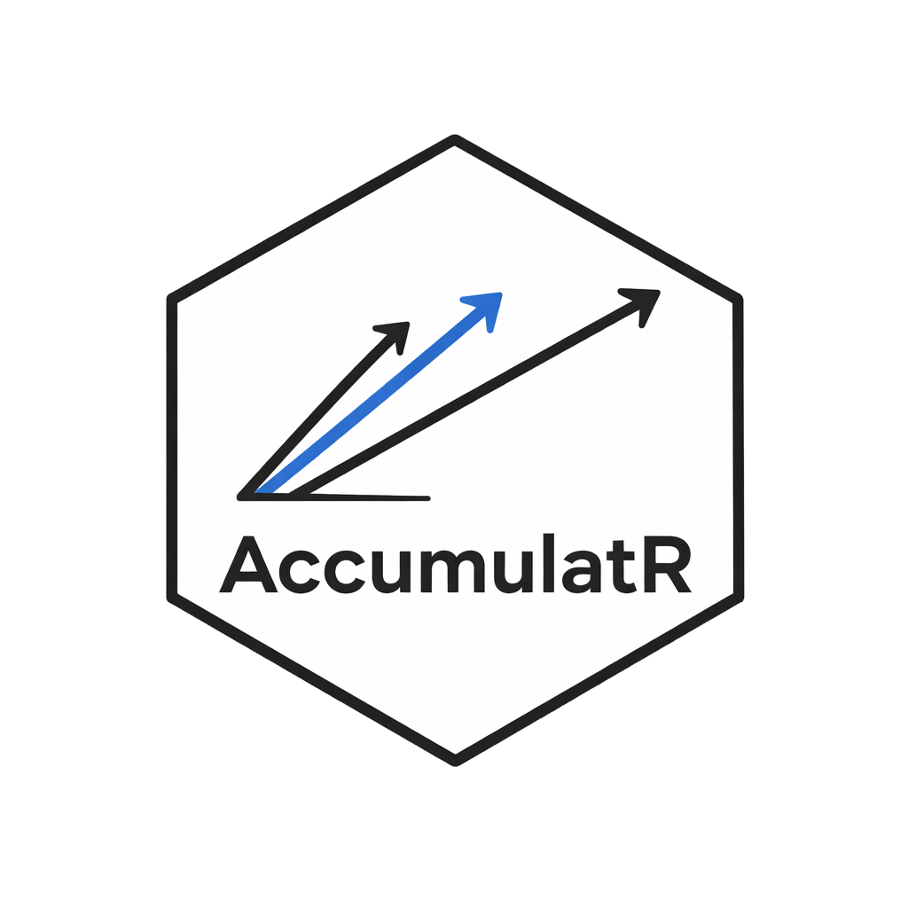

AccumulatR is an R/C++ toolkit for race-model simulation and likelihood evaluation.
It is built for the kinds of models cognitive psychologists use when responses are generated by competing evidence-accumulation processes. You can define a model, simulate behavioral data, and evaluate how well different parameter values explain observed response times and choices.
Installation
Install the released version from CRAN:
install.packages("AccumulatR")To install the current development version from GitHub:
remotes::install_github("niekstevenson/AccumulatR")What the package does
AccumulatR is organized around a simple workflow:
- Define a model with accumulators, pools, and observed responses.
- Turn that specification into an object ready for simulation or fitting.
- Simulate behavioral data from known parameter values.
- Evaluate the log-likelihood of observed data under candidate parameters.
Small Example
The example below defines a two-choice race model, simulates response-time data, and then evaluates the likelihood of those same data under the generating parameters.
library(AccumulatR)
spec <- race_spec() |>
add_accumulator("left", "lognormal") |>
add_accumulator("right", "lognormal") |>
add_outcome("left", "left") |>
add_outcome("right", "right")
model <- finalize_model(spec)
pars <- c(
left.m = log(0.28), left.s = 0.16, left.q = 0, left.t0 = 0,
right.m = log(0.35), right.s = 0.18, right.q = 0, right.t0 = 0
)
param_df <- build_param_matrix(spec, pars, n_trials = 8)
sim <- simulate(model, param_df, seed = 123)
head(sim[c("trial", "R", "rt")])
prepared <- prepare_data(model, sim[c("trial", "R", "rt")])
ctx <- make_context(model)
log_likelihood(ctx, prepared, param_df)simulate() returns behavioral data with one row per trial. In the simplest case that means a response column (R) and a response-time column (rt). log_likelihood() then evaluates how probable those data are under a set of model parameters.
For longer worked examples, see the package articles on the pkgdown site.